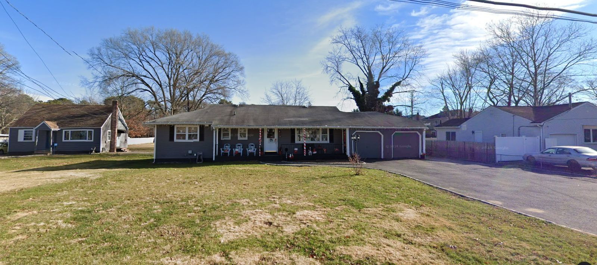

Lot
1.00 ac
43,539 sq ft
A 1.00-acre lot with a 1968 house in Baywood, zoned A (11,250 sq ft lots). Listed at $550,000 and the listing expired without a sale or a relist. Under town zoning and the county septic rule it holds 2 house lots. Last deed recorded 2005.

| Step | Figure | Basis |
|---|---|---|
| Lot area | 43,539 sq ft · 1.00 ac | County tax map parcel outline |
| Wetlands on the lot | None mapped | County freshwater + tidal wetland maps |
| Net buildable area | 43,539 sq ft | |
| Zoning minimum per house | 11,250 sq ft | A · Islip Zoning Ordinance §68-81(A) · Residence A |
| Septic minimum per house | 20,000 sq ft | Groundwater Zone VII · §760-608(B) |
| Binding rule | County septic rule | 20,000 sq ft per house |
| House lots by right | 2 | 2–3 lots usually work with a flag lot or shared drive |
What this means: the lot divides into 2 conforming house lots before roads, frontage and flag-lot rules. Lots under 40,000 sq ft need public water (§760-609). A surveyor's yield map confirms the count.
Why now: the owner already decided to sell and the market didn't take it at $550K. The listing agreement is over, so the owner can talk to anyone.
| Address | Town | Use | 2025 value | Link |
|---|---|---|---|---|
| 1070 Martinstein Ave | Islip | One-family home | — | Name + mailing address |
The lot sits on a filed subdivision map, so a re-subdivision goes back to the town planning board as a map amendment.
| Address | Lot | Use | Owner |
|---|---|---|---|
| 1055 Joselson Avenue | 0.94 ac | One-family home | Individual · lives there |
| 1053 Joselson Avenue | 0.89 ac | One-family home | Individual · lives there |
| 1070 Martinstein Avenue | 0.82 ac | One-family home | — |
| 1064 Martinstein Avenue | 0.30 ac | One-family home | Individual · lives there |
| 55 East Belmont Street | 0.29 ac | One-family home | Individual · lives there |
| 53 East Belmont Street | 0.29 ac | One-family home | Individual · lives there |
| 47 East Belmont Street | 0.29 ac | One-family home | Individual · lives there |
| 51 East Belmont Street | 0.29 ac | One-family home | Individual · lives there |
| Address | Lot | 2025 market value | Distance |
|---|---|---|---|
| 1022 Martinstein Avenue | 0.40 ac | — | 0.37 mi |
| 17 Duke Street | 0.45 ac | — | 0.54 mi |
| 5 Palfrey Street | 0.14 ac | — | 1.49 mi |
3 new houses went up on vacant lots within 1.5 miles since 2021. Assessor values run behind sale prices.
| Where | Before | After | Built so far | Distance |
|---|---|---|---|---|
| 1022 Joselson AveIslip | 1 parcel | 2 lots | 1 house · 1 vacant | 0.28 mi |
| 1098 Joselson AveIslip | 1 parcel | 2 lots | 1 house · 1 vacant | 0.4 mi |
| 1434 N Clinton AveIslip | 1 parcel | 2 lots | 1 house · 1 vacant | 1.22 mi |
| Beech StIslip | 1 parcel | 2 lots | 1 house · 1 vacant | 1.59 mi |
| 1808 Heckscher AveIslip | 1 parcel | 2 lots | 2 houses · 0 vacant | 1.68 mi |
The offer that fits: buy the parcel at land-split value from an owner who already tried to sell, divide it into 2 conforming lots, and sell new houses into a market where new construction on vacant lots nearby carries strong values.
Estimates Lot counts assume the full parcel minus mapped wetlands, before roads and frontage, and need a surveyor's yield map. Owner names are masked; the full record, the phone and the trace are walked through on a call. Pulled Oct 15, 2026 from Suffolk County and New York State public records, town zoning maps and an Oct 4 MLS snapshot.